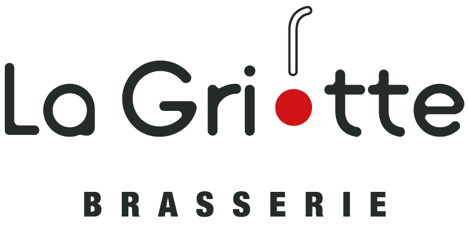

Une fois le repas terminé, l’expérience du Cerisier se poursuit au-dessus du restaurant, dans un boutique-hôtel de 4 chambres au style et à la personnalité individuels. Parfaite façon de découvrir le Cerisier de jour comme de nuit et de s’y sentir pour de bon “comme à la maison”.
Restaurant Gastronomique
À l’étage, Le Cerisier en Ville est restaurant gastronomique, qui apporte une nouvelle facette à la scène culinaire de Lille avec les créations subtiles et pourtant sans prétention. Des grandes tablées qui pourront s’isoler dans des salons privés, jusqu’à l’espace canapé réservé aux gourmets solitaires.